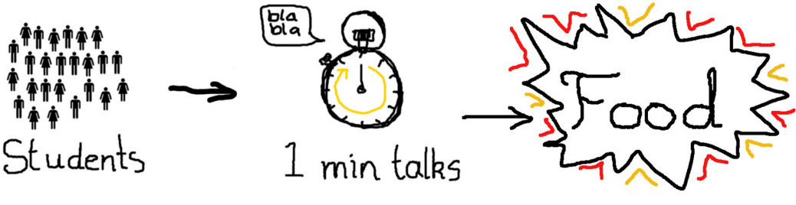

Student/postdoc skills jamboree
September 18, 2014

Held in September 2014, this was a “skills exchange” that mirrored one held earlier in the year, where the postdocs presented their work. This time it was the students’ turn to talk about what they did at the IoA, what problems they worked on, and what skills they had to offer (or wanted to improve). Sadly, problems with the department’s credit card prevented us ordering a lot of pizzas like we had planned, but it was still a great opportunity to eat, drink, and learn about what others in the department do.
Slides
You can download the slides here.
List of speakers
The order was randomised for the talk. Here are the speakers in the order their slides were presented:
- Simon Gibbons
- Christopher Moore
- Scott Thomas
- Adam Bowden
- Iulia Simion
- Erin Kara
- Adam Stevens
- Alvin Chua
- Electra Panagoulia
- Angus Williams
- Gabriel Torrealba
- Laura Keating
- Shaoran Hu
- Harley Katz
- Sarah Smedley
- Aimée Hall
- Christina Hedges
- Eleanor Bacchus
- Liam Coatman
- Kaloian Lozanov
- JD Diaz
- Fernanda Ostrovski
- Nadejda Blagorodnova
- Sophie Reed
- Tiago Andre Costa
- Keith Hawkins
- Patricia Larsen
- Prashin Jethwa
Also speaking, but without slides, were:
- Michael Parker
- Richard Wolstenhulme
- Francesco Belfiore [Cavendish Astrophysics]
- Claudia Cicone [Cavendish Astrophysics]